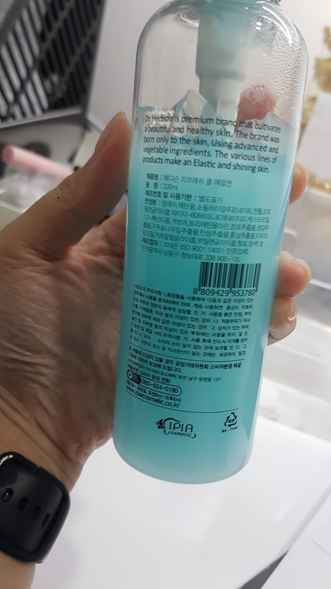

Korean Tiger Balm na Napagkamalang Lunas sa Acne sa Singapore
Table of Contents
ü§¶ Napagkamalang Skincare: Paano Naging Viral na Mali ang Murang Menthol-Cream ng Korea
Sino'ng mag-aakala na isang simpleng maling pagsasalin ang hahantong sa isang skincare na kalamidad?
Sa nakakagulat na twist, ang sikat na aesthetic shop sa Singapore na Lee Na Young Aesthetic, ay nagiging usap-usapan pero hindi para sa magandang dahilan.
Mali nilang ibinida ang isang malaking bote, abot-kayang Korean tiger balm na nagkakahalaga lamang ng 23 SGD bilang isang premium acne solution mula Korea
 Lee Na Young Aesthetic sa Orchard ay malugod na tinatanggap ang mga customer.
Lee Na Young Aesthetic sa Orchard ay malugod na tinatanggap ang mga customer.
Dahil umano sa maling pagsasalin ng salitang 'emulsion,' ang tiger balm na pamparelaks ng kalamnan ay napagkamalan bilang himala sa skincare.
Hindi nila alam na ang produktong punung-puno ng menthol ay hindi talaga angkop para sa maselan na balat ng mukha. Ang mga sabik na customer na umaasang mawawala ang mga blemishes ay nauwi sa seryosong iritasyon sa balat.
 Ang balm na idinisenyo para sa pagpaparelaks ng kalamnan at mayaman sa matapang na amoy ng menthol, ay walang klinikal na epekto sa acne.
Ang balm na idinisenyo para sa pagpaparelaks ng kalamnan at mayaman sa matapang na amoy ng menthol, ay walang klinikal na epekto sa acne.
Sa katunayan, ang paglalagay nito sa mukha ay maaaring makasama.
Hindi tulad ng mga skincare products na may AHA at BHA acids na maaaring magdulot ng kaunting hapdi habang epektibong ginagamot ang acne, ang menthol-infused rub na ito ay walang ganitong benepisyo at talagang masama para sa balat mo, bukod pa sa maaaring magdulot ng permanenteng pinsala sa iyong mga mata!
⚠️ Babala ng Manufacturer: "Hindi para sa Gamit sa Mukha"
Dahil ang produkto ay sadyang idinisenyo para sa pagpaparelaks ng kalamnan, nagbabala ang manufacturer na ang paglalagay nito sa balat ng mukha ay maaaring magdulot ng matinding iritasyon at pamumula. Lalong mapanganib ito sa kalusugan kapag ginamit malapit sa mata
 Ang paglalarawan ng produkto ay nagpayo sa mga customer na gamitin ito para sa pagpaparelaks ng kalamnan ng iyong katawan.
Ang paglalarawan ng produkto ay nagpayo sa mga customer na gamitin ito para sa pagpaparelaks ng kalamnan ng iyong katawan.
Habang ang ilang mga paggamot sa acne ay maaaring magdulot ng kaparehong ‘hapdi’ dahil sa mga aktibong sangkap tulad ng AHA at BHA acids, ang menthol mismo ay walang benepisyo sa paggamot ng acne at maaaring makasama sa maseselang bahagi ng mukha.
Exfoliate o Irritate? Ang Tunay na Pagkakaiba ng AHA/BHA at Menthol
Habang ang mga menthol cream tulad ng tiger balm ay nagbibigay ng malamig na sensasyon para maibsan ang sakit ng kalamnan, ang mga AHA (alpha hydroxy acid) at BHA (beta hydroxy acid) creams ay pangunahing sangkap sa skincare na banayad na nag-e-exfoliate at nililinis ang mga pores para gamutin ang acne.
 Ang manager ay hinihikayat ang mga customer na gamitin ang menthol cream sa mukha, maling akala na ito'y para sa acne.
Ang manager ay hinihikayat ang mga customer na gamitin ang menthol cream sa mukha, maling akala na ito'y para sa acne.
Ang menthol ay walang benepisyo para sa balat na may acne at maaari pang magdulot ng iritasyon sa mukha, lalo na sa maseselang bahagi tulad ng mga mata. Kaya kahit pareho silang maaaring magdulot ng pakiramdam na parang may kirot sa balat, ang AHA/BHA acids ay kaibigan ng iyong balat, habang ang menthol creams ay mas angkop para sa pagpaparelaks ng kalamnan
üí∏ Kapag Napasobra ang Pagtipid: Ang Kwento sa Likod ng Beauty Mishap
Bakit nangyari ang miscommunication na ito sa mga 'eksperto'? Nakakagulat kung paano nagkamali ang isang skincare shop na puno ng mga propesyonal sa pag-aakala na ang isang balm na pamparelaks ng kalamnan ay isang solusyon sa acne.
Narito ang ilang posibleng dahilan sa likod ng pagkakamaling ito:
Mga Desisyon Batay sa Gastos ng Senior Management
Sa hangarin na makakuha ng mas mataas na kita, inuuna ng senior management ang pagbawas ng gastos kaysa sa kalidad. Sa pamamagitan ng pagbili ng mga produkto tulad ng 28 SGD, 500ml tiger balm, maaari nilang bawasan ang mga gastusin at pataasin ang kita.
 Ang Dr. Hedison's Refresh Cool Emulsion ay humigit-kumulang
Ang Dr. Hedison's Refresh Cool Emulsion ay humigit-kumulang 28.87 SGD para sa 500ml, at 22 SGD para sa 200ml.
Nakakalungkot, maraming customer ang hindi alam kung ano ang ipinapahid sa kanilang balat, hinahayaan ang mga 'eksperto' na magdesisyon para sa kanila. Ang mga therapist sa tawag ay aminadong matagal na nilang hinihiling na itigil ang pagbili ng murang produkto.
Ngunit hindi ito sineseryoso ng pamunuan, na tatalakayin natin sa susunod na bahagi.
Diskonekta sa Pagitan ng Pamunuan at mga Therapist
Madalas may agwat sa pagitan ng mga pumipili ng mga produkto at ng mga gumagamit ng mga ito sa mga kliyente. Ang problema ay ang mga therapist, na direktang nakikipag-ugnayan sa mga customer, ay halos walang boses sa pagpili ng produkto.
 Isang therapist sa shop na buong pagmamalaking ipinapakilala ang kanilang bagong 'solusyon sa acne' sa mga customer.
Obligado silang gamitin kung ano ang ibinibigay, na maaaring makabawas sa kanilang sigasig na tiyakin ang kasiyahan ng customer. Sa halip na i-personalize ang mga treatment, maaari silang magtapos sa parang robot na sumusunod lamang sa mga protocol na itinakda ng pamunuan.
üè• Pagpapagaling Matapos ang Tiger Balm Mishap: Mga Hakbang sa Paggaling
Para sa lahat ng nakaranas ng iritasyon sa balat mula sa hindi inaasahang insidente ng tiger balm, mahalaga na unahin ang iyong kalusugan. Mahigpit naming inirerekomenda ang pagkonsulta sa dermatologist upang makakuha ng propesyonal na payong medikal na naaangkop sa iyong sitwasyon.
Samantala, isaalang-alang ang paggamit ng banayad at hypoallergenic na moisturizing cream upang makatulong na mapakalma at maprotektahan ang iyong balat. Tandaan, ang tamang pag-aalaga at gabay ng eksperto ay susi sa paggaling mula sa anumang skincare setbacks.